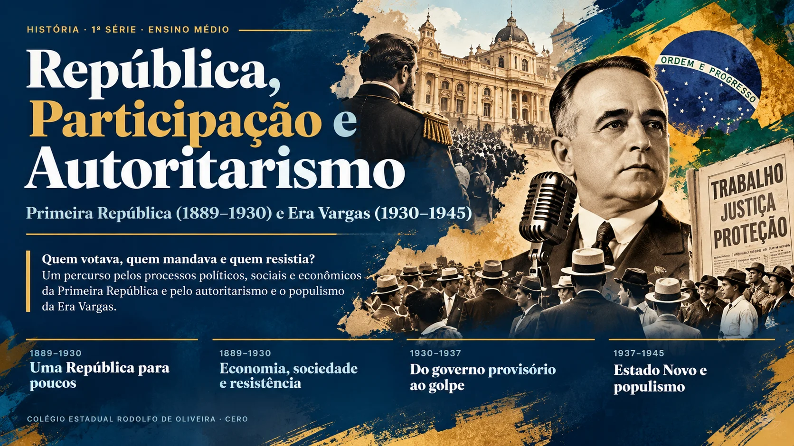

República, Participação e Autoritarismo — Primeira República (1889–1930) e Era Vargas (1930–1945)

Antes de começar
Habilidades e objetivos
O que você vai desenvolver e aprender ao longo deste material.
Descritores e objetivos de aprendizagem
| Descritor (DC-GO) | Objetivos de aprendizagem |
|---|---|
| GO-EMCHS602A · Primeira República Identificar as características políticas, sociais e culturais na Primeira República Brasileira (1889–1930), entendendo as formas de organização e de articulação desta sociedade com as ideias de liberdade e democracia para compreender as origens do republicanismo brasileiro. |
|
| GO-EMCHS602B · Era Vargas Assimilar as características do autoritarismo e do populismo durante a Era Vargas no Brasil, utilizando textos e análises sociológicas do período para verificar os limites da liberdade, da democracia e da cidadania no Brasil pós Revolução de 1930, dentro de um contexto influenciado pelo nazismo e fascismo. |
|
- quem podia votar na Primeira República e por que a República nasceu com a participação popular tão restrita;
- como funcionavam as oligarquias, o coronelismo e a fraude eleitoral, e como o café, a indústria e as cidades mudaram a economia e a sociedade;
- como operários, mulheres, população negra, sertanejos, marinheiros e militares de baixa patente se organizaram e reagiram;
- como a Revolução de 1930, a Constituição de 1934 e o golpe de 1937 ampliaram e, depois, suspenderam direitos;
- o que são autoritarismo, populismo e trabalhismo, e como os historiadores discutem esses conceitos;
- de que modo o nazifascismo, a propaganda e a repressão marcaram o Estado Novo e como ele chegou ao fim.
Para começar
Poder, direitos e participação
Antes dos capítulos, as lentes e a linha do tempo que organizam o percurso.
Entre 1889 e 1945, o Brasil trocou de regime, de elites no poder e de formas de governar. A República nasceu prometendo liberdade e participação, mas por décadas ela funcionou para poucos; depois de 1930, o Estado passou a conceder direitos ao mesmo tempo que fechava as portas da participação livre. Estudar esse período é perguntar, a cada fase: quem tinha voz, quem mandava e como os de baixo reagiram?
Três lentes para ler o período
Cidadania: conjunto de direitos civis (liberdades e igualdade perante a lei), políticos (votar e ser votado) e sociais (trabalho, saúde, educação). Quem tem todos é cidadão pleno; quem tem só alguns é um cidadão incompleto.
Estadania: termo do historiador José Murilo de Carvalho para a situação em que a maior parte da população fica à mercê de decisões tomadas por uma parcela pequena que ocupa o governo, e os direitos chegam como favor, não como conquista.
Linha do tempo: 1889–1945
- 1889Proclamação da RepúblicaGolpe articulado por militares e elites, sem participação popular.
- 1891Primeira Constituição republicanaFederalismo, Estado laico e fim do voto censitário, mas com votantes restritos.
- 1894Primeiro presidente civilPrudente de Morais inaugura a República Oligárquica.
- 1904–1910Vacina e ChibataDuas revoltas urbanas contra a violência do Estado.
- 1917Greve geral em São PauloO movimento operário pressiona por salário, jornada e fim do trabalho infantil.
- 1922–1927Tenentismo e Coluna PrestesJovens oficiais atacam fraudes e oligarquias; o PCB é fundado e o feminismo se organiza.
- 1930Revolução de 1930Fim da Primeira República e início da Era Vargas.
- 1932–1934Código Eleitoral e ConstituiçãoVoto secreto e feminino; Justiça Eleitoral; direitos trabalhistas na Constituição.
- 1935–1937Polarização, repressão e golpeAIB e ANL; Lei de Segurança Nacional; Plano Cohen; Estado Novo.
- 1943–1945CLT e queda do Estado NovoConsolidação das Leis do Trabalho, redemocratização e deposição de Vargas.
Primeira República · 1889–1930
Uma República para poucos
Como o poder foi organizado e quem estava autorizado a participar. Neste capítulo, os gráficos são interativos.
A República foi proclamada em 1889 por um pequeno grupo de militares e de elites, e o povo, nas palavras do jornalista Aristides Lobo, assistiu “bestializado”. Sem apoio popular amplo, o novo regime precisou construir símbolos, escrever uma Constituição e decidir quem entraria na política. A resposta foi: muito poucos.
- Quem participou da fundação da República e quem ficou de fora?
- Como funcionava o voto e por que ele não representava a vontade da população?
- Como oligarquias e coronéis controlavam a política?
Quatro conceitos para ler a República
Cidadania
Conjunto de direitos civis, políticos e sociais. Quem tem os três é cidadão pleno; quem tem só alguns é cidadão incompleto.
Democracia
Governo em que o poder vem do povo, por eleições livres e competitivas. Ter eleições não basta: é preciso que o voto seja livre e amplo.
Participação popular
Todas as formas pelas quais as pessoas influenciam decisões: votar, mas também organizar-se, fazer greve, escrever na imprensa e ocupar as ruas.
Resistência
Reação organizada ou espontânea contra uma ordem considerada injusta, dos sertões às fábricas e aos quartéis.
Como usar: passe o mouse (ou toque) nos elementos para ver detalhes; use os botões para trocar o recorte; todo gráfico tem uma versão em tabela ou lista.
“O povo assistiu àquilo bestializado, atônito, surpreso, sem conhecer o que significava.”
Uma República sem o povo
Três projetos de República
Nos primeiros anos, três correntes disputavam o rumo do novo regime. Os liberais, ligados à elite agrária, defendiam o federalismo, isto é, mais autonomia para os estados, e o fim do voto censitário, mas também o voto aberto, que permitia a patrões e coronéis vigiar o voto de seus empregados. Os positivistas, fortes entre os militares, queriam um governo centralizado e conduzido por homens “preparados”, sem autonomia para a população nem para os estados: uma república autoritária. Os jacobinos, inspirados na Revolução Francesa, defendiam liberdades de expressão e de associação e até a reforma agrária.
Venceu a conciliação entre liberais e positivistas, afastando as propostas mais radicais. A República nascia, portanto, não de uma revolução, mas de acordos entre facções que tinham vínculos com o regime anterior e rejeitavam mudanças profundas.
Poder para as elites regionais
Defendiam federalismo e liberdades econômicas, sobretudo para as oligarquias cafeeiras.
Ordem e progresso
Queriam um Estado forte e centralizado, conduzido por uma elite técnica e militar.
República popular
Pediam participação popular mais ampla, mas tinham pouco peso diante das oligarquias.
A Constituição de 1891: quem podia votar?
A Constituição de 1891 separou a Igreja do Estado, extinguiu o Poder Moderador e o Senado vitalício, adotou o federalismo, criou o registro civil e acabou com o voto censitário. Mesmo assim, a cidadania política continuou muito estreita: só votavam homens brasileiros, adultos e alfabetizados. Mulheres, analfabetos, menores de 21 anos, mendigos, religiosos reclusos e militares de baixa patente ficavam de fora.
Gráfico 1 · Quem podia votar
Cada quadrado é 1% dos adultos
Escolha um recorte e veja quantos quadrados acendem. Passe o mouse sobre os quadrados.
Os recortes se sobrepõem: uma mulher analfabeta e jovem aparece em mais de um. Por isso cada botão mostra um recorte por vez, e eles não somam 100%.
O fim do voto censitário foi uma ampliação apenas formal. Na prática, a exigência de saber ler e escrever, num país com cerca de 65% de analfabetos, excluía a grande maioria dos adultos.
A tabela abaixo mostra que os vencedores recebiam percentuais enormes de votos válidos, mas que os votantes eram uma fração mínima da população. Eleição, naquele contexto, servia mais para repartir o poder entre elites do que para expressar a vontade geral.
| Ano | Candidato vencedor | % de votos válidos | % de votantes na população |
|---|---|---|---|
| 1894 | Prudente de Morais | 84,3 | 2,21 |
| 1902 | Rodrigues Alves | 91,7 | 3,44 |
| 1910 | Hermes da Fonseca | 57,1 | 3,19 |
| 1918 | Rodrigues Alves | 99,1 | 1,48 |
| 1922 | Arthur Bernardes | 56,0 | 2,90 |
| 1930 | Júlio Prestes | 57,7 | 5,65 |
Seleção de eleições presidenciais. Fonte: dados reunidos em VIEIRA et al., Moderna Plus: História (2024), cap. 12.
Gráfico 2 · As eleições presidenciais
Pouca gente votava, e o vencedor quase sempre “ganhava de lavada”
Alterne a medida para comparar a participação com o resultado do vencedor.
Fonte dos dados: Moderna Plus, cap. 12. Os percentuais de votos válidos seguem a tabela do livro.
Com voto aberto, poucos eleitores e a maioria sem direitos básicos, a Primeira República ilustra a ideia de estadania: o acesso a direitos dependia de relações pessoais com quem tinha poder, e não da participação autônoma dos cidadãos.
Da República da Espada à República Oligárquica
Os dois primeiros governos foram militares. Deodoro da Fonseca enfrentou oposição do Congresso e a crise do Encilhamento, uma bolha financeira provocada pela emissão desordenada de papel-moeda; em novembro de 1891 fechou o Congresso e decretou estado de sítio, mas a Marinha reagiu na Primeira Revolta da Armada e ele renunciou. Floriano Peixoto assumiu sem convocar novas eleições, prendeu opositores e enfrentou a Segunda Revolta da Armada e a Revolução Federalista, no Sul, que deixou cerca de 10 mil mortos. Mesmo nessa fase, o autoritarismo já aparecia como solução de governo.
Em 1894, o paulista Prudente de Morais, candidato dos cafeicultores, tornou-se o primeiro presidente civil. Começava a chamada República Oligárquica, em que um pequeno número de famílias e grupos econômicos controlava o governo.
Oligarquia: governo exercido por poucas pessoas ou grupos, em geral ligados pela riqueza e pela família. Na Primeira República, as oligarquias estaduais mais fortes eram as de São Paulo e Minas Gerais.
O sistema que sustentava o poder oligárquico
Como o voto era aberto, o eleitor votava sob a vigilância de gente ligada ao coronel. As fraudes tinham nome: o voto de cabresto, em que o eleitor era conduzido como um animal; o curral eleitoral, em que votantes eram confinados e vigiados até o dia da votação; a eleição a bico de pena, em que atas e assinaturas eram falsificadas; e a degola, em que uma comissão da Câmara recusava o diploma de candidatos de oposição eleitos.
Como a fraude funcionava, passo a passo
Voto de cabresto
O eleitor era conduzido a votar no candidato indicado pelo coronel, como um animal puxado pelo cabresto. Quem dependia do coronel por trabalho, terra ou favores raramente ousava recusar.
Voto aberto
Sem sigilo, o voto podia ser fiscalizado. A pessoa sabia que a escolha seria conhecida por quem mandava na região.
Curral eleitoral
Redes de dependência faziam de cada fazenda ou município uma reserva de votos de um chefe local.
Eleição a bico de pena
Os resultados dependiam de quem, com pena e tinteiro, elaborava as atas: nomes de mortos, ausentes ou inexistentes eram registrados como eleitores.
Degola
Na verificação final dos poderes, a Câmara podia negar o diploma a candidatos da oposição eleitos, “degolando” seus mandatos.
Política dos governadores
Sistema desenhado no governo Campos Sales: o presidente apoiava as oligarquias estaduais, e elas elegiam deputados fiéis ao presidente. A oposição raramente chegava ao Congresso.
“Cada povo tem a soberania que a sua indiferença merece!”
A política dos governadores e o café com leite
No governo de Campos Sales (1898-1902), o governo federal passou a apoiar os grupos dominantes de cada estado e a respeitar sua autonomia interna, em troca de sustentação no Congresso. Era a política dos governadores, que dificultava a atuação da oposição e mantinha no poder apenas políticos fiéis. Sobre essa base, as elites de São Paulo e Minas Gerais, donas da produção de café e de leite, alternaram-se na Presidência: a chamada política do café com leite, que durou, com conflitos, até 1930.
Quem ficou de fora
A cidadania incompleta atingia grupos diferentes de maneiras diferentes. Em 1890, o país tinha mais de 14 milhões de habitantes, e a maior parte deles era formada por pessoas negras, recém-saídas da escravidão, sem terra, sem escola e sem voto efetivo.
Gráfico 3 · A população em 1890
A maioria da população era negra
Passe o mouse ou foque cada faixa. A largura é proporcional à população.
Fonte: IBGE, Censo de 1890, em Moderna Plus, cap. 12. As categorias seguem a classificação do livro; os valores restantes correspondem a outras classificações.
Seis grupos, seis exclusões
Mulheres
O que lhes faltava
O voto. A Constituição de 1891 silenciava sobre as mulheres, e a interpretação dominante as excluía. Elas só conquistariam o voto em todo o país com o Código Eleitoral de 1932.
Como reagiram
Bertha Lutz fundou a Liga pela Emancipação Intelectual da Mulher (1919) e realizou o Primeiro Congresso Feminista (1922). Leolinda Daltro criou o Partido Republicano Feminino. O Rio Grande do Norte permitiu o voto feminino em 1926, e Alzira Soriano foi eleita prefeita de Lajes em 1929.
Pobres
O que lhes faltava
Dependiam de coronéis, patrões e donos de terra. O voto aberto e a violência tornavam arriscado votar contra quem controlava seu sustento.
Como reagiram
Entre fugas, greves, sociedades de resistência e revoltas como a da Vacina, os pobres mostraram que sabiam se organizar, mesmo sem canais formais de participação.
Analfabetos
O que lhes faltava
O direito de se alistar como eleitores. Em 1900, cerca de 65% dos adultos eram analfabetos, o que deixava a maioria fora da política formal.
Por que importa
A exclusão pelo saber ler e escrever somava-se à falta de escolas públicas: o Estado negava a escola e depois usava a falta de escola como razão para negar o voto.
Indígenas
O que lhes faltava
Reconhecimento, terra e proteção. Povos indígenas eram tratados como obstáculos ao avanço de ferrovias, fazendas e colonização, e sofriam violência e perda de território.
Vozes e debates
Leolinda Daltro foi pioneira na defesa dos direitos indígenas e, ao mesmo tempo, fundou o Partido Republicano Feminino. Seu caso mostra que lutas por gênero e por povos indígenas podiam se encontrar.
Imigrantes
O que lhes faltava
Muitos imigrantes chegaram em busca de trabalho e encontraram jornadas longas, salários baixos e pouca proteção. Nas fábricas, eram maioria entre operários têxteis paulistas.
Como reagiram
Trouxeram experiências do anarquismo, do socialismo e do sindicalismo revolucionário, e participaram de greves como a de 1917. Em resposta, o Estado reprimiu e expulsou muitos deles.
População negra
O que lhes faltava
Terra, escola, emprego estável e igualdade perante a lei. O fim da escravidão, em 1888, não veio com políticas de integração, e o discurso oficial muitas vezes apagou a presença negra da nação republicana.
Como reagiram
Criaram jornais da imprensa negra, sociedades de resistência e participaram de greves e revoltas, como a dos carregadores do porto do Rio e a Revolta da Chibata.
Gráfico 4 · Nas fábricas têxteis paulistas
Quem fazia a indústria funcionar
Clique em uma barra para ler o detalhe.
As categorias se sobrepõem (uma mulher italiana aparece em duas barras). Fonte: Moderna Plus, cap. 12.
Resistências: a participação fora das urnas
A história da Primeira República não se resume ao controle das oligarquias. Do campo à cidade, do convés dos navios às redações da imprensa negra, muita gente reagiu. Use os filtros abaixo para separar os movimentos por tipo, clique em cada linha e leia o que reivindicavam e como terminaram.
Gráfico 5 · Linha do tempo das resistências
Treze movimentos, 1889–1930
Ligue e desligue os grupos; passe o mouse ou use as setas e Tab para navegar; clique (ou Enter) para abrir o detalhe.
Os números das resistências
Nota para o professor · recorte regional
Os livros-base tratam pouco de Goiás. Para o recorte local (oligarquias goianas, passagem da Coluna Prestes, Santa Dica), é preciso consultar fontes regionais e conferir os dados antes de uso em avaliação.
Vozes dos autores
Um mesmo período pode ser lido de várias maneiras. Escolha um autor e veja a ideia principal, como ela ajuda a ler os gráficos e onde ela aparece nos livros. As ideias estão resumidas com nossas palavras; as aspas aparecem apenas em fontes do período.
José Murilo de Carvalho
Historiador · Cidadania no Brasil; Os bestializadosIdeia principal
A cidadania é feita de direitos civis, políticos e sociais, e no Brasil eles chegaram de forma desigual e em ordem própria. Na Primeira República, a maioria da população tinha poucos direitos e participava pouco da política formal.
Como usar nos gráficos
Os quadrados do gráfico 1 mostram a dimensão política da cidadania; as resistências do gráfico 5 mostram formas de participação fora das urnas.
Nos livros: Interação e Ser ProtagonistaAristides Lobo
Jornalista republicano · fonte do período, 1889Ideia principal
Testemunha da Proclamação, registrou que o povo assistiu ao fato sem compreender o que ocorria. A frase tornou-se ponto de partida do debate sobre a República “sem o povo”.
Como usar nos gráficos
Compare a frase com o gráfico 5: o povo realmente ficou parado ou encontrou outros modos de agir?
Nos livros: Moderna Plus e InteraçãoBoris Fausto
Historiador · História do BrasilIdeia principal
Em sua leitura da política do início da República, o historiador mostra como as elites buscaram associar o novo regime à prosperidade dos negócios, o que revela a prioridade dada à economia sobre a participação.
Como usar nos gráficos
Observe o gráfico 2: a estabilidade eleitoral convivia com baixa participação.
Nos livros: Moderna PlusVictor Nunes Leal
Jurista · Coronelismo, enxada e votoIdeia principal
O coronelismo é um arranjo de trocas entre poder público e poder privado: o coronel entrega votos, e o governo entrega cargos, obras e proteção.
Como usar nos gráficos
Relacione com o gráfico 2: o resultado das eleições era produzido por redes de dependência, e não pela escolha livre.
Nos livros: Por toda parteSidney Chalhoub
Historiador · Visões da liberdade; Trabalho, lar e botequimIdeia principal
Pessoas escravizadas e libertas tinham visões próprias de liberdade, e trabalhadores urbanos construíram seu cotidiano e suas formas de luta mesmo diante do descaso das autoridades.
Como usar nos gráficos
Leia o gráfico 4 e a linha do tempo com essa lente: trabalhadores não eram massa passiva, mas sujeitos da própria história.
Nos livros: Moderna Plus, Por toda parte e Ser ProtagonistaLima Barreto e Lilia Schwarcz
Escritor carioca (1881–1922) e historiadoraIdeia principal
Lima Barreto usou a literatura para criticar o racismo, o nacionalismo ufanista e as promessas não cumpridas da República. Lilia Schwarcz, com o desenhista Spacca, recontou a Primeira República a partir de sua obra na HQ Triste República.
Como usar nos gráficos
Use o gráfico 3 para discutir como a desigualdade racial aparece na crítica do escritor.
Nos livros: Moderna Plus e Interação (sugestões de leitura)Síntese do tópico
| Conceito | Na teoria | Na prática (1889–1930) |
|---|---|---|
| Cidadania | Direitos civis, políticos e sociais para todos. | Cidadania incompleta: cerca de 4% dos adultos votavam; mulheres, analfabetos e pobres ficavam de fora. |
| Democracia | Eleições livres e competitivas. | Eleições com voto aberto, fraude e vitórias sem competição real; coronelismo e política dos governadores. |
| Participação popular | Influência do povo nas decisões. | Canais formais fechados; participação por greves, revoltas, imprensa e associações. |
| Resistência | Reação a uma ordem injusta. | Canudos, Contestado, Vacina, Chibata, greves, tenentismo, sufragismo e imprensa negra. |
- Quais grupos você acha que mais perderam com a Primeira República? Por quê?
- Voto e participação são a mesma coisa? Dê um exemplo da linha do tempo.
- O que mudou, e o que ainda persiste, na relação entre voto e desigualdade no Brasil de hoje?
Primeira República · 1889–1930
Café, indústria e exclusão
Os processos econômicos e sociais por trás da política oligárquica.
Por trás do jogo político, havia uma economia e uma sociedade em transformação. O café financiava o poder, a indústria começava a crescer, os imigrantes chegavam, as cidades se modernizavam. O progresso, porém, tinha dono: a modernização foi planejada pelas elites e, muitas vezes, contra os mais pobres, os negros e os indígenas.
- Como o café e a indústria se ligavam à política?
- O que a modernização das cidades custou à população pobre?
- Que ideias de “nação” e de “povo” a elite republicana defendia?
Do café à indústria
O poder econômico dos cafeicultores sustentava o poder político de São Paulo e Minas Gerais. Quando a crise de 1929 derrubou o preço do café, a base econômica da política do café com leite ficou abalada, e isso pesou no fim da Primeira República.
A borracha e a Amazônia
Entre o fim do século XIX e o início do XX, a borracha tornou-se o segundo principal produto de exportação do país, atrás apenas do café, impulsionada pela demanda de bicicletas e automóveis. Milhares de nordestinos atingidos pela seca migraram para a Amazônia. A riqueza financiou a reforma de Belém e de Manaus, mas os seringueiros viviam em condições de miséria e trabalho forçado, e muitos povos indígenas morreram em conflitos, por doenças e pelo trabalho extenuante.
A cidade “civilizada”: a reforma do Rio de Janeiro
Entre 1902 e 1906, no governo de Rodrigues Alves, o Rio de Janeiro, então capital federal, foi remodelado pelo prefeito Pereira Passos, inspirado na reforma de Paris. O porto foi ampliado, abriu-se a Avenida Central e o sanitarista Oswaldo Cruz conduziu o combate às epidemias de febre amarela e varíola. Mas o custo humano foi alto: os responsáveis pelas obras tinham poderes ilimitados, os moradores eram avisados por simples cartaz, centenas de casas e cortiços foram demolidos e a população pobre foi empurrada para morros, mangues e subúrbios. O período ficou conhecido como a “ditadura Passos”, e o prefeito, como “Bota-abaixo”.
Quem era o “povo” brasileiro?
Povos indígenas: integrar ou eliminar?
O projeto de modernização atingiu os povos indígenas por meio da expansão das lavouras de café, da construção de ferrovias e da criação de colônias de imigrantes. Nos discursos oficiais falava-se em uma “marcha da civilização” sobre territórios supostamente “vazios”. Na construção da ferrovia Noroeste do Brasil, entre 1905 e 1914, os Kaingang foram violentamente deslocados e massacrados, e houve quem defendesse publicamente seu extermínio.
Em 1910 foi criado o Serviço de Proteção aos Índios e Localização de Trabalhadores Nacionais (SPILTN), chefiado pelo marechal Rondon, depois chamado Serviço de Proteção aos Índios (SPI). O órgão tinha como missão proteger a integridade dos povos indígenas, mas prevalecia a ideia de que eles deviam adotar os costumes dos não indígenas, e o próprio serviço chegou a autorizar o uso econômico de terras indígenas e deslocamentos forçados.
Educação: um direito para poucos
Em 1900, cerca de 65% da população acima de 15 anos era analfabeta, índice que quase não mudou em vinte anos. Setores urbanos viram nesse quadro um obstáculo à modernização, e ganhou força o movimento da Escola Nova, liderado por educadores como Anísio Teixeira, Fernando de Azevedo e Lourenço Filho, que defendia um sistema público, gratuito e para ambos os sexos, com currículo comum adaptado às realidades regionais.
A modernização da Primeira República foi seletiva: trouxe avenidas, ferrovias e fábricas, mas ampliou a exclusão. Quem não cabia no projeto de nação “civilizada” era removido, criminalizado ou ignorado.
Primeira República · 1889–1930
Quem resistiu: participação cidadã
Revoltas, greves, mulheres, imprensa negra e tenentismo contra a ordem oligárquica.
A exclusão não foi aceita em silêncio. No campo, nas ruas, nos quartéis, nas fábricas e nos jornais, pessoas comuns criaram formas próprias de organização e de protesto. Muitas dessas lutas foram reprimidas com violência, mas deixaram marcas profundas e ajudaram a abalar a ordem oligárquica.
- Como camponeses, trabalhadores e mulheres se organizavam fora da política formal?
- Como o Estado respondia a cada movimento?
- O que esses movimentos revelam sobre a participação cidadã na época?
Fé e terra no sertão: os movimentos messiânicos
Messianismo: movimento religioso organizado em torno de uma liderança que anuncia a chegada de justiça e de uma vida melhor para os oprimidos. Em Canudos e no Contestado, ele se uniu à luta pela terra e foi tratado pelo Estado como ameaça à ordem.
Quando a cidade reage: Vacina e Chibata
Em novembro de 1904, o governo tornou a vacina contra a varíola obrigatória, com multa e demissão para quem recusasse. Além do medo da vacina, a população se revoltou contra a forma autoritária da campanha, associada às demolições da reforma urbana. A Revolta da Vacina durou dias; o governo decretou estado de sítio e deportou presos para o Acre.
Em novembro de 1910, cerca de 2 mil marinheiros, majoritariamente negros e pobres, tomaram navios de guerra na Baía de Guanabara, liderados por João Cândido. O estopim foi um castigo de 250 chibatadas a um marinheiro. Exigiram o fim dos castigos corporais, melhores salários e educação. O governo anistiou os revoltosos, mas depois expulsou da Marinha mais de mil deles, prendeu líderes e enviou parte dos presos para trabalhos forçados. As chibatadas, no entanto, deixaram de fazer parte dos códigos disciplinares da Marinha: a revolta, mesmo punida, mudou uma prática.
O movimento operário
- aumento de salários e garantia dos direitos de associação e de greve;
- fim do trabalho de crianças e do trabalho noturno de menores e de mulheres;
- jornada de oito horas e pagamento de horas extras.
Mulheres: do chão da fábrica ao voto
As operárias enfrentavam jornadas de dez a catorze horas, assédio de patrões e salários menores. Mesmo assim, organizaram sindicatos e greves e usaram jornais operários e peças de teatro para denunciar a exploração e as desigualdades dentro do próprio movimento operário. Ao lado dessa luta, crescia o sufragismo: Bertha Lutz fundou a Liga para a Emancipação Intelectual da Mulher (1919) e promoveu o Primeiro Congresso Feminista do Brasil (1922); Leolinda Daltro criou o Partido Republicano Feminino e foi pioneira na defesa dos direitos indígenas. No Rio Grande do Norte, Alzira Soriano foi eleita prefeita de Lajes em 1929, depois de o estado abolir a restrição eleitoral por sexo.
A imprensa negra e a resistência cultural
Desde o Império e, com mais força, depois da abolição, jornais feitos por pessoas negras e dirigidos a elas denunciavam o racismo e reivindicavam igualdade de direitos: O Baluarte, O Menelik, Clarim d’Alvorada e muitos outros, em São Paulo, no Rio Grande do Sul e em outros estados. A população negra também atuou nas artes, como o pintor Arthur Timótheo da Costa, que retratou meninos e homens negros apagados das representações oficiais da nação.
Tenentismo: militares contra as oligarquias
Em 1922, jovens oficiais ocuparam o Forte de Copacabana, na Revolta dos 18 do Forte. Derrotados, voltaram a se rebelar em 1924 em várias regiões e formaram a Coluna Prestes-Miguel Costa, que entre 1925 e 1927 percorreu cerca de 25 mil quilômetros defendendo o voto secreto, o ensino primário obrigatório e o fim das fraudes e da corrupção. O tenentismo era um movimento de militares e não de massas, mas colocou na agenda temas que a oposição civil também defendia: moralização da política e fim do voto aberto.
A crise e o fim da Primeira República
Em 1922, a candidatura de Arthur Bernardes, apoiada por São Paulo e Minas, enfrentou a oposição de militares e de parte da elite, e o presidente Epitácio Pessoa fechou o Clube Militar. No governo de Washington Luís, a repressão ao movimento operário e ao tenentismo aumentou, e a Lei Celerada (1927) censurou a imprensa e limitou o direito de reunião. A crise de 1929 derrubou o preço do café. Em 1930, o Partido Republicano Paulista lançou Júlio Prestes à presidência, rompendo o acordo com Minas, que se uniu a Paraíba e Rio Grande do Sul na Aliança Liberal, com Getúlio Vargas como candidato. A Aliança defendia voto secreto e regulação dos direitos dos trabalhadores, mas perdeu em eleições fraudadas por ambos os lados. Em 3 de outubro de 1930, um movimento armado depôs Washington Luís e encerrou a Primeira República.
Oligarquias goianas
A Primeira República em Goiás foi marcada pelo poder de famílias oligárquicas, entre elas os Caiado e os Bulhões, que se alternavam no controle do estado, em um modelo semelhante ao coronelismo estudado acima. Essa estrutura só foi abalada com a Revolução de 1930.
A Coluna Prestes passou por Goiás
Entre 1925 e 1926, a Coluna Prestes atravessou o interior goiano. O mapa de seu trajeto, reproduzido em Por toda parte: História, assinala cidades como Jataí, Niquelândia e Posse.
Santa Dica
No interior de Goiás, na região de Pirenópolis, a líder religiosa Benedita Cipriano Gomes, a Santa Dica, reuniu em torno de si uma comunidade de fiéis na década de 1920. Como em Canudos e no Contestado, a organização popular em torno de uma liderança religiosa foi vista pelas autoridades como ameaça e reprimida pelas forças do estado.
Nota para o professor · recorte regional
Os livros didáticos de base tratam pouco de Goiás nesse período. Os dados sobre as oligarquias goianas e Santa Dica vêm de pesquisas regionais (ver “Para saber mais” na bibliografia) e devem ser conferidos com fontes locais antes de uso em avaliação.
Era Vargas · 1930–1937
Do golpe de 1930 ao Estado Novo
Centralização, polarização, nazifascismo e o caminho do autoritarismo.
A Revolução de 1930 derrubou a República das oligarquias, mas não instalou uma democracia. Em quinze anos, Vargas passou do governo provisório a um governo constitucional e, depois, a uma ditadura. Entender esse caminho é medir os limites da liberdade e da cidadania em um mundo em que o nazismo e o fascismo ganhavam força.
- Que medidas centralizaram o poder depois de 1930?
- Que direitos políticos foram ampliados e quais foram suspensos?
- Como o contexto internacional e a polarização política ajudaram a justificar o golpe de 1937?
O governo provisório (1930–1934): poder concentrado
Ao assumir, Vargas suspendeu a Constituição de 1891, passou a governar por decretos, dissolveu o Congresso e as assembleias estaduais e municipais e substituiu os governadores eleitos por interventores de sua confiança. O objetivo era desarticular as oligarquias e concentrar o poder, mas a centralização desagradou elites estaduais, que a viam como ameaça ao federalismo. Foram criados também o Ministério do Trabalho, Indústria e Comércio e o Ministério da Educação e Saúde Pública, que seriam centrais em todo o período.
Em São Paulo, a insatisfação levou à Revolução Constitucionalista de 1932. Depois de manifestações em que quatro jovens foram mortos pela polícia (a sigla MMDC homenageia seus nomes), paulistas pegaram em armas em 9 de julho, exigindo eleições e uma Constituição. Foram derrotados em poucos meses. A resposta de Vargas combinou punição e acordo: prisões e exílios de lideranças, mas também a nomeação de um interventor civil e paulista e a convocação de uma Assembleia Constituinte.
Voto secreto, voto feminino e Constituição de 1934
A Constituição de 1934, promulgada em julho, consolidou o ensino primário gratuito e obrigatório, a Justiça Eleitoral e a Justiça do Trabalho, e incorporou direitos como salário mínimo, férias remuneradas e jornada de oito horas, que não alcançavam os trabalhadores rurais. Também limitou o Executivo, que passou a ser fiscalizado pelo Legislativo e a não poder legislar por decretos, e fixou mandato de quatro anos sem reeleição. Vargas, que foi eleito de forma indireta para o novo mandato, escreveu em seu diário que o texto era “monstruoso”, porque reduzia o poder do Executivo.
Direitos políticos e direitos sociais avançaram em 1932-1934, mas por caminhos diferentes: o voto feminino e a Constituição resultaram de pressão organizada, e a legislação trabalhista vinha de cima. Os direitos civis, como liberdade de expressão e de associação, continuaram frágeis.
Polarização: integralistas e aliancistas
Com a crise de 1929 ainda pesando, o clima político de 1934-1937 foi de polarização. A Ação Integralista Brasileira (AIB), fundada em 1932 por Plínio Salgado, era inspirada no fascismo italiano: defendia um Estado autoritário, o corporativismo, o culto ao líder, o lema “Deus, pátria e família” e era anticomunista e antissemita. Seus militantes usavam camisas verdes, a letra sigma e a saudação “anauê”, e chegaram a ter entre 100 mil e 200 mil adeptos. A Aliança Nacional Libertadora (ANL), de 1935, reunia comunistas, socialistas, tenentes de esquerda e católicos progressistas em uma frente antifascista, com lemas como “Pão, terra e liberdade!” e pautas como reforma agrária, nacionalização de empresas e luta contra o imperialismo; chegou a cerca de 100 mil filiados, com Luís Carlos Prestes como presidente de honra.
Paralelamente, a Frente Negra Brasileira, fundada em 1931 em São Paulo, organizou núcleos em vários estados, denunciou e boicotou estabelecimentos que barravam negros, manteve o jornal A Voz da Raça, ofereceu escolas e atendimento de saúde e, em 1936, tornou-se partido. Ele seria fechado com o Estado Novo.
Fascismo: ideologia surgida na Itália após a Primeira Guerra Mundial, que defende um Estado todo-poderoso, a eliminação da oposição, o nacionalismo extremo e o culto ao líder. O nazismo alemão é uma variante com forte racismo e antissemitismo. Nos anos 1930, ideias fascistas inspiraram movimentos em vários países, inclusive no Brasil.
Repressão e o pretexto do “perigo comunista”
A Lei de Segurança Nacional, de abril de 1935, passou a tratar como crime a participação em movimentos políticos e sociais e a publicação de materiais considerados “subversivos”. Com base nela, a ANL foi fechada em julho de 1935. Em novembro do mesmo ano, militares ligados ao Partido Comunista se levantaram em Natal, Recife e Rio de Janeiro: o levante, chamado pelo governo de Intentona Comunista, foi rapidamente derrotado, mas alimentou o anticomunismo. Seguiu-se perseguição em todo o país: Luís Carlos Prestes e sua esposa, Olga Benário, foram presos; servidores, professores, políticos e escritores como Graciliano Ramos e Pagu foram demitidos, cassados ou presos, mesmo sem acusação formal. Calcula-se que, no início de 1936, ao menos 20 mil pessoas estavam presas. Em setembro de 1936, foi criado o Tribunal de Segurança Nacional.
10 de novembro de 1937: o golpe do Estado Novo
As eleições presidenciais estavam marcadas para 1938. Em setembro de 1937, a imprensa divulgou o Plano Cohen, um suposto plano comunista de tomada do poder, na verdade um documento forjado por um capitão do Exército ligado à AIB, Olímpio Mourão Filho. Usando o pânico criado pelo falso plano, Vargas anunciou o golpe em 10 de novembro de 1937, fechou o Congresso e as assembleias, extinguiu os partidos (inclusive a AIB), impôs a censura à imprensa, nomeou interventores e passou o controle das polícias estaduais ao Exército. No mesmo dia, foi outorgada uma Constituição escrita previamente pelo jurista Francisco Campos, que ficou conhecida como Polaca, por inspirar-se na Constituição autoritária da Polônia e também na Carta del Lavoro, da Itália fascista.
“Para reajustar o organismo político às necessidades econômicas do país […] não se oferecia outra alternativa além da que foi tomada, instaurando-se um regime forte, de paz, de justiça e de trabalho.”
Poucos dias depois do golpe, em uma cerimônia cívica no Rio de Janeiro, as bandeiras dos estados foram queimadas, pois a nova Constituição previa apenas a bandeira nacional. O gesto simbolizava a eliminação das diferenças políticas entre os estados e a unidade imposta de cima.
A máquina de controle do Estado Novo
DOPS e Delegacia Especial
Órgãos como o Departamento de Ordem Política e Social, de 1924, e a Delegacia Especial de Segurança Política e Social, de 1933, vigiavam e prendiam opositores.
DIP, 1939
O Departamento de Imprensa e Propaganda exercia censura prévia à imprensa e ao rádio e produzia publicidade centrada na figura de Vargas.
LSN e TSN
A Lei de Segurança Nacional continuou em uso e o Tribunal de Segurança Nacional julgava crimes políticos.
Sem partidos e sem eleições
A organização política e a representação autônoma de indivíduos e grupos eram proibidas.
Um regime autoritário em guerra contra o nazifascismo
Nos anos 1930, o governo brasileiro mostrou simpatia inicial pela Alemanha nazista, mas na Segunda Guerra Mundial alinhou-se aos Estados Unidos e, em 1942, juntou-se aos Aliados. A Força Expedicionária Brasileira (FEB), com cerca de 25 mil homens, lutou na Itália em 1944. A contradição era evidente: como um governo sem eleições e com censura poderia lutar ao lado das democracias contra o nazifascismo? A pergunta ajudou a minar a legitimidade do Estado Novo.
Autoritarismo: forma de poder que concentra as decisões em poucas mãos e limita a participação, a crítica e as liberdades. No Estado Novo, ele apareceu no fechamento do Congresso, na censura, na polícia política e na proibição dos partidos.
Era Vargas · 1937–1945
Populismo, trabalhismo e propaganda
Direitos concedidos, liberdades suspensas e o fim do Estado Novo.
O mesmo governo que fechou o Congresso e censurou a imprensa também criou salário mínimo, férias e a CLT, e foi chamado de “pai dos pobres”. A Era Vargas combinou repressão com benefícios, e é por isso que ela é tão debatida: seria manipulação das massas, troca de direitos por apoio, ou uma mistura dos dois?
- Quais direitos trabalhistas foram criados e quais ficaram de fora?
- Como o Estado controlava os sindicatos e a imagem de Vargas?
- Por que o conceito de populismo é debatido pelos historiadores?
Trabalhismo: direitos com tutela
Os direitos sociais chegaram antes dos políticos e dos civis, em um período autoritário. Isso reforça a ideia de que o direito apareceu como presente do governante, a estadania, e não só como resultado de participação livre. Mas os historiadores lembram que muitas dessas garantias já eram reivindicadas por greves e movimentos anteriores a 1930.
Propaganda e o mito do “pai dos pobres”
O governo fez da imagem de Vargas um instrumento político. Os direitos reivindicados por décadas de lutas foram apresentados pela propaganda oficial como dádivas do presidente, “protetor dos trabalhadores, das crianças, dos vulneráveis”. A CLT foi criada em meio às comemorações do Dia do Trabalhador, e o Ministério da Educação distribuía cartilhas que reforçavam a suposta proximidade do presidente com as crianças. O DIP promovia uma ética de valorização do trabalho disciplinado.
O rádio teve papel central, em um país em que, em 1940, apenas 41% dos homens e 32% das mulheres eram alfabetizados. Desde 1938, o programa Hora do Brasil divulgava as realizações do governo; em 1940, a Rádio Nacional foi apropriada pelo Estado. A cultura popular foi incorporada de forma dirigida: o samba foi estimulado e censurado para exaltar o trabalho, desfiles de escolas de samba passaram a exigir temas nacionais, e a capoeira deixou de ser crime no Código Penal de 1940.
O debate sobre o populismo
Paternalismo: relação em que o poder trata os governados como tutelados, apresentando direitos como favores. Populismo: estilo de governo que se dirige às massas com apelo ao líder carismático; é conceito debatido. Trabalhismo: conjunto de ideias e leis que ligou o reconhecimento de direitos do trabalho ao Estado, a partir de 1930.
Industrialização e Estado forte
Em todas as suas fases, o governo Vargas incentivou a industrialização, o nacionalismo e a intervenção do Estado na economia, controlando preços, salários e câmbio. Setores estratégicos receberam empresas estatais: o Conselho Nacional do Petróleo (1939), a Companhia Siderúrgica Nacional, em Volta Redonda (1941), e a Companhia Vale do Rio Doce (1942). A CSN foi resultado da aproximação com os Estados Unidos na Segunda Guerra. Já a crise do café foi enfrentada com compra e queima de estoques, e entre 1930 e 1944 queimaram-se 78 milhões de sacas, o que custeou, com dinheiro público, a oligarquia cafeeira.
Cultura, identidade e o debate sobre raça
Nos anos 1930, intelectuais reinterpretaram o Brasil. Gilberto Freyre (Casa-grande & senzala, 1933) propôs ver a miscigenação como algo positivo, contrapondo-se ao discurso do branqueamento, mas sua visão ajudou a consolidar o mito da democracia racial, que escondia o racismo e a violência da escravidão. Caio Prado Júnior analisou a economia e as classes; Sérgio Buarque de Holanda apontou, em Raízes do Brasil (1936), o patrimonialismo, isto é, a apropriação do Estado pela elite política. A literatura regionalista de Rachel de Queiroz, José Lins do Rego, Graciliano Ramos e Jorge Amado retratou as contradições da modernização.
Marcha para o Oeste e povos indígenas
Pedro Ludovico e Goiânia
Depois da Revolução de 1930, Pedro Ludovico Teixeira foi nomeado interventor em Goiás e governou o estado por anos durante a Era Vargas. Em 1933, foi lançada a pedra fundamental de Goiânia, nova capital planejada e símbolo de modernização e de integração do Centro-Oeste ao projeto da Marcha para o Oeste.
A Colônia Agrícola Nacional de Goiás
Em 1941, o governo federal criou a Colônia Agrícola Nacional de Goiás (CANG), na região de Ceres, como projeto de colonização dirigida. Ela ilustra o programa de ocupação do interior e de fixação de trabalhadores no Oeste.
Povos indígenas em Goiás
Karajá e Xerente, citados nos livros de base, estão entre os povos que viveram a Marcha para o Oeste na região que hoje abrange Goiás e Tocantins.
Nota para o professor · recorte regional
As informações sobre Pedro Ludovico, Goiânia e a CANG vêm de pesquisas regionais (ver “Para saber mais”) e não dos quatro livros de base, que tratam de Goiás de modo breve. Conferir com fontes locais antes de uso em avaliação.
O fim do Estado Novo
A sociedade civil questionou a ditadura mesmo antes do fim da guerra. Em 1943, setores liberais da elite política, inclusive antigos apoiadores de Vargas, lançaram o Manifesto dos Mineiros, distribuído clandestinamente, em defesa da redemocratização. Houve também uma passeata estudantil duramente reprimida em São Paulo, em 1943, e, em 1945, o Primeiro Congresso Brasileiro de Escritores reivindicou liberdade de expressão e de voto. A volta da FEB, a vitória sobre o nazifascismo e o fim da censura abriram caminho à abertura política: o governo permitiu novos partidos (UDN, PSD e PTB) e convocou eleições para dezembro de 1945.
Em maio de 1945, grupos populares saíram às ruas com o lema “Queremos Getúlio!”, no movimento chamado queremismo, que reivindicava a permanência de Vargas no poder, o que mostra o prestígio que ele conquistou entre os trabalhadores. Mas, quando Vargas tentou trocar o chefe de polícia do Distrito Federal, comandantes militares usaram o episódio para forçá-lo a renunciar. Vargas foi deposto em outubro de 1945, pelas mãos dos militares que haviam ajudado a implantar o regime em 1937.
- 1930Governo provisórioInterventores, Congresso fechado, Constituição suspensa.
- 1932Código EleitoralVoto secreto, Justiça Eleitoral e voto feminino.
- 1934ConstituiçãoDireitos trabalhistas, limites ao Executivo.
- 1935LSN, ANL e levanteRepressão a partidos e sindicatos.
- 1937Estado NovoGolpe, Constituição Polaca, partidos extintos.
- 1939–1943DIP, rádio e CLTPropaganda, censura e legislação trabalhista.
- 1945RedemocratizaçãoQueremismo, eleições marcadas e deposição de Vargas.
Para fechar
Síntese: da República oligárquica ao Estado Novo
Os dois períodos lado a lado.
A passagem da Primeira República à Era Vargas muda o jeito de exercer o poder, mas mantém uma pergunta central: quanto de participação autônoma existe quando o Estado ou as elites controlam o acesso aos direitos? O quadro abaixo reúne os dois períodos lado a lado.
| Dimensão | Primeira República (1889–1930) | Era Vargas (1930–1945) |
|---|---|---|
| Poder | Oligarquias estaduais; coronelismo; política do café com leite | Centralização; interventores; Estado Novo (1937–1945) |
| Participação política | Voto aberto e restrito; fraude eleitoral; mulheres e analfabetos excluídos | Voto secreto e feminino (1932); depois, fechamento do Congresso e fim dos partidos (1937) |
| Economia | Café como base; industrialização inicial; imigração e borracha | Industrialização com intervenção do Estado; estatais; crise do café |
| Trabalho e direitos | Sem leis trabalhistas; greves reprimidas como “caso de polícia” | Trabalhismo, CLT e sindicato oficial; trabalhadores rurais de fora |
| Controle e propaganda | Código Penal de 1890, “vadiagem”, reforma urbana excludente | DIP, censura, rádio, polícia política e mito do “pai dos pobres” |
| Resistência | Canudos, Contestado, Vacina, Chibata, greve de 1917, tenentismo, sufragismo | Constitucionalismo de 1932, ANL, Frente Negra, queremismo, Manifesto dos Mineiros |
Síntese elaborada a partir do conteúdo dos capítulos.
Para consultar
Glossário
Os conceitos centrais do material em linguagem direta.
- Aliança Liberal
- Coligação que lançou Getúlio Vargas candidato em 1930, reunindo Minas Gerais, Paraíba e Rio Grande do Sul.
- Aliança Nacional Libertadora (ANL)
- Frente antifascista de 1935, com programa reformista, fechada pelo governo no mesmo ano.
- Ação Integralista Brasileira (AIB)
- Movimento de inspiração fascista fundado em 1932, extinto em 1937.
- Autoritarismo
- Forma de poder que concentra decisões em poucas mãos e limita a participação, a crítica e as liberdades.
- Café com leite
- Alternância na Presidência entre as elites de São Paulo (café) e Minas Gerais (leite).
- Cidadania
- Condição de quem exerce direitos civis, políticos e sociais e participa da vida pública.
- Clientelismo
- Troca de favores entre quem tem poder e quem precisa de proteção ou benefício, em geral em troca de apoio político.
- CLT
- Consolidação das Leis do Trabalho, de 1943, que reuniu direitos trabalhistas em uma só legislação.
- Coronelismo
- Sistema político da Primeira República em que grandes proprietários controlavam votos e autoridades locais em troca de favores.
- Curral eleitoral
- Prática de confinar e vigiar eleitores até o momento do voto.
- Degola
- Recusa do diploma de candidatos de oposição eleitos, pela comissão de verificação de poderes.
- DIP
- Departamento de Imprensa e Propaganda, criado em 1939, responsável por censura e propaganda.
- Encilhamento
- Crise financeira do início da República, causada pela emissão desordenada de papel-moeda.
- Estadania
- Termo de José Murilo de Carvalho para a cidadania vista como favor do Estado, e não como resultado da ação dos cidadãos.
- Estado Novo
- Ditadura de Vargas entre 1937 e 1945.
- Fascismo
- Ideologia que defende Estado todo-poderoso, nacionalismo extremo e culto ao líder.
- Interventor
- Representante nomeado por Vargas para governar um estado, no lugar de governadores eleitos.
- Messianismo
- Movimento religioso em torno de um líder visto como enviado para guiar e proteger a comunidade.
- Oligarquia
- Governo exercido por poucas pessoas ou grupos.
- Paternalismo
- Relação em que o poder trata os governados como tutelados, apresentando direitos como favores.
- Plano Cohen
- Documento forjado em 1937 que atribuía aos comunistas um plano de tomada do poder.
- Polaca
- Nome dado à Constituição de 1937, por inspirar-se na Constituição autoritária da Polônia.
- Política dos governadores
- Pacto entre o presidente e as oligarquias estaduais, criado no governo Campos Sales: o governo federal apoiava as elites de cada estado em troca de apoio no Congresso.
- Populismo
- Estilo de governo dirigido às massas com apelo ao líder carismático; é um conceito debatido pelos historiadores.
- Queremismo
- Movimento popular de 1945 com o lema “Queremos Getúlio!”.
- República Oligárquica
- Nome da Primeira República (1889–1930), dominada por oligarquias estaduais e coronéis.
- Sufragismo
- Movimento pelo direito de voto das mulheres.
- Tenentismo
- Conjunto de revoltas de jovens oficiais nos anos 1920, contra as oligarquias e a fraude eleitoral.
- Trabalhismo
- Conjunto de ideias e leis que ligou o reconhecimento de direitos do trabalho ao Estado, a partir de 1930.
- Voto censitário
- Voto condicionado à renda; foi abolido em 1891.
- Voto de cabresto
- Controle do voto dos eleitores pelos chefes políticos locais.
Referências
Bibliografia e fontes
De onde vêm os textos de apoio, as citações e os recortes regionais.
Livros didáticos de base
- AZEVEDO, Gislane; SERIACOPI, Reinaldo. Por toda parte: História. São Paulo: FTD, 2024.
- CAMPOS, Cristiano; FERREIRA, Lier Pires; SILVA, Renata (coord.). História: democracia e protagonismo (Interação). São Paulo: Editora do Brasil, 2024.
- SM EDUCAÇÃO (org.). Ser protagonista: Ciências Humanas e Sociais Aplicadas — História. 1. ed. São Paulo: Edições SM, 2024.
- VIEIRA, Felipe de Paula Góis; BACKX, Isabela; FERNANDES, Luiz Estevam de Oliveira; ABREU, Marcelo. Moderna Plus: História. São Paulo: Moderna, 2024.
Obras e fontes citadas nos livros
- CARVALHO, José Murilo de. Cidadania no Brasil: o longo caminho. Rio de Janeiro: Civilização Brasileira, 2001 (citada em Interação e Ser protagonista).
- WEFFORT, Francisco. O populismo na política brasileira. Rio de Janeiro: Paz e Terra, 1980. p. 62-63 (citado em Interação).
- GOMES, Angela de Castro. O populismo e as ciências sociais no Brasil: notas sobre a trajetória de um conceito. Tempo, Rio de Janeiro, v. 1, n. 2, p. 14, 1996 (citado em Interação).
- FAUSTO, Boris. História do Brasil. São Paulo: Edusp, 1995 (citado em Moderna Plus).
- SCHWARCZ, Lilia Moritz; STARLING, Heloisa Murgel. Brasil: uma biografia. São Paulo: Companhia das Letras, 2015 (citado em Moderna Plus).
- BRASIL. Presidência da República. Proclamação ao povo brasileiro, 10 nov. 1937 (citada em Moderna Plus).
- CARVALHO, José Murilo de. Os bestializados: o Rio de Janeiro e a República que não foi. São Paulo: Companhia das Letras, 1987 (citado em Moderna Plus e Interação).
- CHALHOUB, Sidney. Visões da liberdade. São Paulo: Companhia das Letras, 1990 (citado em Ser protagonista).
- LEAL, Victor Nunes. Coronelismo, enxada e voto (apresentado em Por toda parte).
- SCHWARCZ, Lilia Moritz; SPACCA. Triste República: a Primeira República comentada por Lima Barreto. Quadrinhos na Cia, 2022 (indicado em Interação).
- ARENDT, Hannah. A condição humana, 1958 (citada em Por toda parte).
- GOUGES, Olympe de. Declaração dos Direitos da Mulher e da Cidadã, 1791 (reproduzida em Ser protagonista).
- WEBER, Max. Texto sobre o monopólio da violência física legítima (citado em Ser protagonista).
Para saber mais (recorte regional)
- CPDOC/FGV, verbetes sobre a Primeira República, a Coluna Prestes e a Revolução de 1930.
- Materiais regionais sobre as oligarquias goianas, Santa Dica, Pedro Ludovico Teixeira, a fundação de Goiânia e a Colônia Agrícola Nacional de Goiás.
Colégio Estadual Rodolfo de Oliveira · CERO · 2026